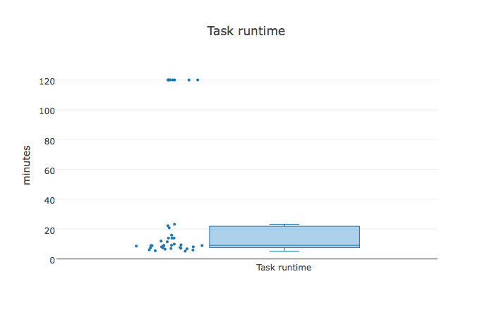

Towards a Unified Telemetry Data Framework for HPC Environments
|
Ole Weidner School of Informatics University of Edinburgh ole.weidner@ed.ac.uk |
Adam Barker School of Computer Science University of St Andrews adam.barker@st-andrews.ac.uk |
Malcolm Atkinson School of Informatics University of Edinburgh malcolm.atkinson@ed.ac.uk |
International Workshop on Runtime and Operating Systems for Supercomputers
Washington, D.C., USA, June 27, 2017
Talk Outline
- Application Challenges & Motivation
- Telemetry as Platform Service
- Anatomy & Context Graph Model
- Programming Interface
- Implementation Blueprint
- Outlook
1
Application Challenges & Motivation
Scenario 1: Degraded Disk I/O

Describe the single box plot here. Describe how this leads to longer execution times + wasted credits
Scenario 1: Observation

Show second plot comapring with I/O throughput (find correct OS metric) trend.
Scenario 1: Contextualization

Show heatmap and show how faulty nodes caused the issue.
Scenario 2: Network Issues
Describe the single box plot here. Describe how this leads to longer execution times + wasted credits
Scenario 2: Observation
Show second plot comapring with I/O throughput (find correct OS metric) trend.
Scenario 2: Contextualization
Show heatmap and explain how faulty network switch caused issues
Scenario 3: Dynamic Memory Requirements
Describe the single box plot here. Describe how this leads to longer execution times + wasted creditsScenario 3: Observation
Show second plot comapring with I/O throughput (find correct OS metric) trend.Scenario 3: Contextualization
Show heatmap and explain.Challenges & Lessons Learned
- Explain the overhead involved and that no there is no tooling support for this
- Explain how this is a problem of many 2nd gen application
2
Telemetry as Platform Service
Status Quo: Application-Driven

Application-level collection and processing of telemtry data. This causes a lot of overhead.
Platform Service Approach
Telemetry service takes over data collection and provides data access and higher-level functions to applications
Requirements
- Explain the requirements for such a platform
Requirements cont.
- Explain the requirements for such a platform
3
Anatomy & Context Graph Model
Application and Platform Anatomy
Describe time-variant graph structuresContext Mapping
Explain how to get from application to platform and vice versa.Example Context Graph
Needs annotations. We could even try to animate this
Programming Interface
Describe the API with some examples (from paper)Language-Agnostic REST API
Describe how the graph can be queries effieciently with GraphQL http://graphql.orgComplex Graph Queries
Describe how the graph can be queries effieciently with GraphQL http://graphql.orgNotification and Call-Backs
Describe how they are registerd and http://graphql.orgImplementation Blueprint
Describe the implementation blueprint (figures can be taken from paper)Outlook
Describe the implementation blueprint (figures can be taken from paper)Data-Driven HPC Idea
Apply principles, architectures and tools from "big data" / large-scale data analytics to manage application and platform operational data:
- Look at HPC clusters and their application as large-scale distributed continuous sensor data
- Use scalable transport mechanisms to move the data from their sources into an analytics pipeline
- Use real-time, stream processing to analyze the data for anomalies, patterns, etc.
- Integrate this with HPC platforms
Maps our problem to a well-known space with many established solutions
THANK YOU
Slides available online:
https://oweidner.github.io/ross-2017-talk